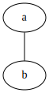
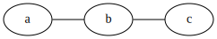
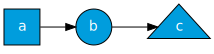
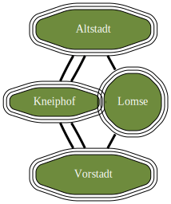
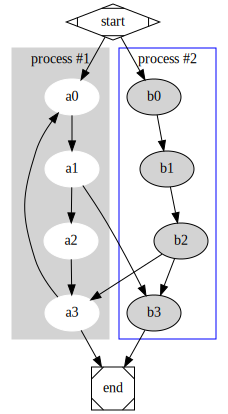
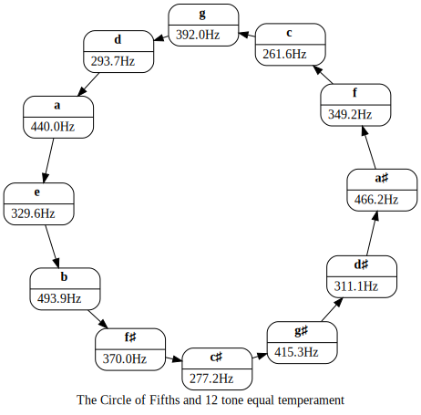
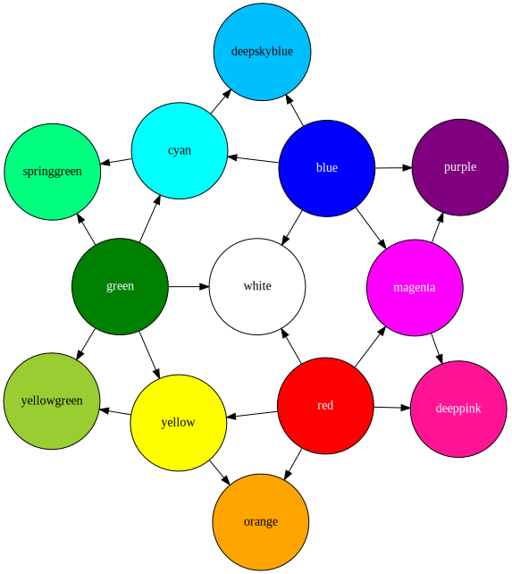

GraphvizDotLang.jl
Create Graphviz graphs straight from Julia. There is a Graphviz.jl package that offers interop between Julia and the Graphviz C library. However, it seems that this package does not give us a nice interface to generate DOT language.
Graphviz works with a special language for describing graphs called DOT. The documentation of Graphviz describes the syntax for this language. This module helps generating expressions in the DOT language programmatically.
This module defines a set of structs that match the different elements in the DOT language. The print(::IO, ::T) method is used to provide writers for each of these structs.
Graphviz supports many attributes. This module does not check for validity of the attributes you give it.
The syntax of Graphviz is very liberal. It will accept a lot of varieties of input. This module encapsulates all IDs in double quotation marks.
Tutorial
Graphviz supports two main types of graphs: directed and undirected. Those can be created using either digraph() for directed graphs, or graph() for undirected ones.
We then add to a graph, by using the pipe-operator (|>). There are several functions that follow this pattern. There is node() for creating nodes in the graph, edge() for adding edges between nodes, and attr() for adding global attributes. Let's create our first undirected graph:
using GraphvizDotLang: graph, digraph, node, edge, attr, save
g = graph() |> edge("a", "b")
Graph attributes can be added, either as |> attr(:graph; ...) or as arguments to the graph() constructor. Let's make the graph go from left to right:
g = graph(rankdir="LR") |> edge("a", "b", "c")
You see that nodes are implicitly created when they appear in an edge statement, and that edge() accepts any number of arguments. Let's make this a directed graph, and add a bit of flair. Under the hood, the graph is collected into a data structure, which we can show as plain text in the DOT language.
g = digraph(rankdir="LR") |>
attr(:node; style="filled", fillcolor="#009DDD",
fontcolor="white", fontname="Nunito") |>
edge("a", "b", "c") |>
node("a"; shape="square") |>
node("b"; shape="circle") |>
node("c"; shape="triangle")digraph {
graph[rankdir="LR";];
node[fillcolor="#009DDD";fontcolor="white";fontname="Nunito";style="filled";];
"a"->"b"->"c";
"a"[shape="square";];
"b"[shape="circle";];
"c"[shape="triangle";];
}To actually save this to an image (the default is SVG), run save().
save(g, "fig/tutorial3.svg")
Examples
Bridges of Königsberg
using GraphvizDotLang: graph, edge, node, save, attr
g = graph(;layout="neato") |>
attr(:node; shape="tripleoctagon", style="rounded,filled",
fillcolor="darkolivegreen4",
fontcolor="white") |>
attr(:edge; len="1.4", penwidth="3") |>
node("North"; label="Altstadt", pos="0,1", width="2", height="0.7") |>
node("South"; label="Vorstadt", pos="0,-1", width="2", height="0.7") |>
node("Center"; label="Kneiphof", pos="1,0") |>
node("East"; label="Lomse", pos="2,0", height="1") |>
edge("East", "South", "Center", "North") |>
edge("East", "North", "Center", "South") |>
edge("Center", "East")
save(g, "konigsberg.svg")
Clusters
- How to use
subgraph
using GraphvizDotLang: digraph, edge, node, save, attr, subgraph
g = digraph("G")
cluster0 = subgraph(g, "cluster_0"; label="process #1", style="filled", color="lightgray") |>
attr(:node; style="filled", color="white") |>
edge(("a$i" for i in 0:3)...)
cluster1 = subgraph(g, "cluster_1"; label="process #2", color="blue") |>
attr(:node; style="filled") |>
edge(("b$i" for i in 0:3)...)
g |>
edge("start", "a0") |>
edge("start", "b0") |>
edge("a1", "b3") |>
edge("b2", "a3") |>
edge("a3", "a0") |>
edge("a3", "end") |>
edge("b3", "end") |>
node("start"; shape="Mdiamond") |>
node("end"; shape="Msquare")
save(g, "clusters.svg")
Circle of Fifths
- Shows
recordnodes withHTMLlabels
using GraphvizDotLang: digraph, edge, node, attr, HTML, save
using Printf: @sprintf
a_freq = 440.0
note_names = [
"c", "c♯", "d", "d♯", "e", "f", "f♯", "g", "g♯", "a", "a♯", "b"
]
note_values = Dict(n => i for (i, n) in enumerate(note_names))
function equal_tempered(note)
a_freq * 2^((note_values[note] - note_values["a"]) / 12)
end
g = digraph(label="The Circle of Fifths and 12 tone equal temperament",
layout="neato", start="regular", rankdir="LR") |>
attr(:node; shape="record", style="rounded") |>
attr(:edge; len="1.2")
for (i, n) in enumerate(note_names)
et_freq = equal_tempered(n)
g |>
node(n; label=HTML(@sprintf "<b>%s</b> | %4.1fHz" n et_freq)) |>
edge(n, note_names[(i + 6) % 12 + 1])
end
save(g, "circle_of_fifths.svg")
Twelve colors
- using node fill colors
- using
neatolayout
# After an example by Costa Shulyupin
using GraphvizDotLang: digraph, edge, node, save, attr
colors = Dict(
"orange" => [],
"deeppink" => [],
"purple" => [],
"deepskyblue" => [],
"springgreen" => [],
"yellowgreen" => [],
"yellow" => ["yellowgreen", "orange"],
"red" => ["orange", "yellow", "white", "magenta", "deeppink"],
"magenta" => ["purple", "deeppink"],
"blue" => ["deepskyblue", "cyan", "white", "magenta", "purple"],
"cyan" => ["springgreen", "deepskyblue"],
"green" => ["yellowgreen", "yellow", "white", "cyan", "springgreen"],
"white" => [])
white_text = Set(["blue", "green", "purple", "red", "magenta", "deeppink"])
g = digraph("Twelve_colors"; layout="neato", normalize="0", start="regular") |>
attr(:node; shape="circle", style="filled", width = "1.5") |>
attr(:edge; len="2")
for (c, others) in colors
g |> node(c; fillcolor=c, fontcolor=c ∈ white_text ? "white" : "black")
for o in others
g |> edge(c, o)
end
end
save(g, "twelve_colors.svg"; engine="neato")
API
GraphvizDotLang.graph — Functiongraph(name = nothing; kwargs ...)Create a Graph object for undirected graphs. Each of the keyword arguments is added as a graph attribute.
julia> graph("hello"; fontname="sans serif", bgcolor="#fff0e0") |>
edge("a", "b")
graph "hello" {
graph[bgcolor="#fff0e0";fontname="sans serif";];
"a"--"b";
}GraphvizDotLang.digraph — Functiondigraph(name = nothing; kwargs ...)Create a Graph object for directed graphs.
julia> digraph() |>
edge("a", "b")
digraph {
"a"->"b";
}GraphvizDotLang.subgraph — Functionsubgraph(parent::Union{Graph,Subgraph}, name=nothing; kwargs...)Create new subgraph. Returns the subgraph.
GraphvizDotLang.node — Functionnode(id::String, port::Union{String,Nothing}=nothing; kwargs...)Add node to a graph.
julia> graph() |> node("Node"; fillcolor="red", fontcolor="white")
graph {
"Node"[fillcolor="red";fontcolor="white";];
}GraphvizDotLang.edge — Functionedge(from::String, to::String ...; kwargs ...)Add an edge to a graph.
julia> graph() |> edge("a", "b"; label="connect!")
graph {
"a"--"b"[label="connect!";];
}
julia> digraph() |> edge("a", "b", "c"; label="direct!")
digraph {
"a"->"b"->"c"[label="direct!";];
}GraphvizDotLang.attr — Functionattr(symb::Symbol; attrs...)Add attributes to the graph. The symb argument must be one of [:graph, :node, :edge].
GraphvizDotLang.HTML — TypeHTML(html::String)Any HTMLish label should be wrapped into a HTML struct, so that we know to change the quotation marks from double quotes to angled brackets.
GraphvizDotLang.save — Functionsave(g::Graph, filename::String; engine="dot", format="svg")Run the dot command to save the graph to file. Creates the containing directory if it doesn't already exist.